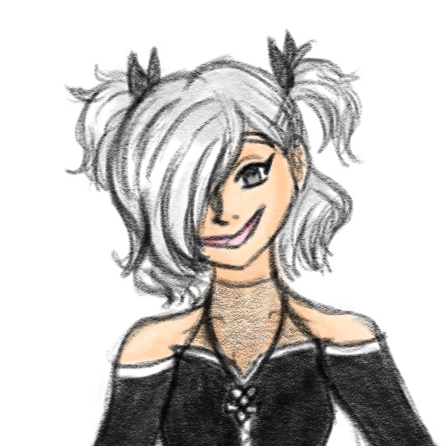
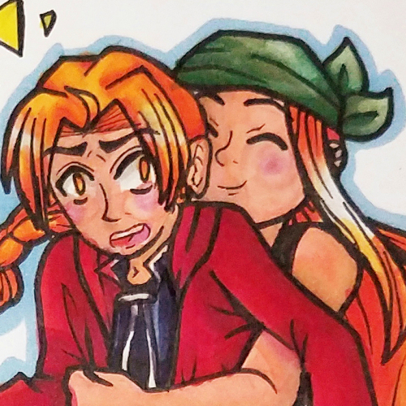
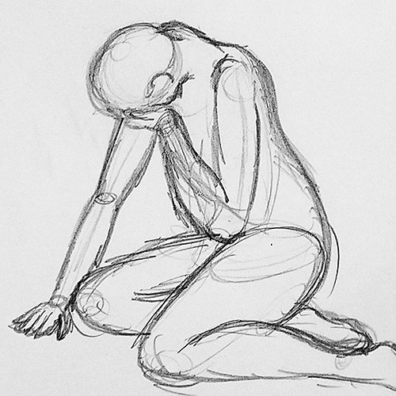
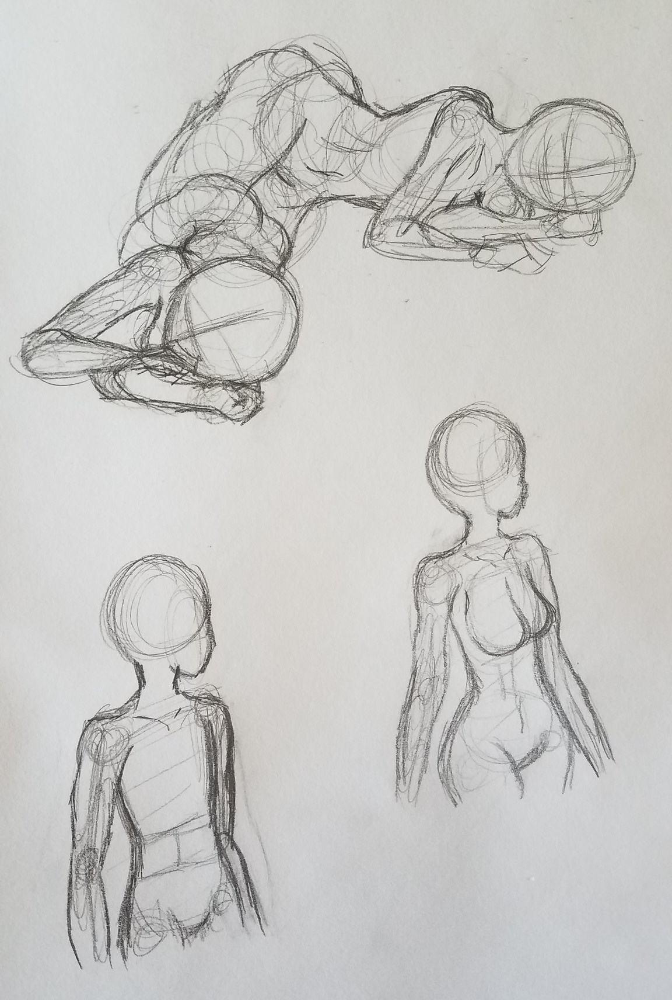
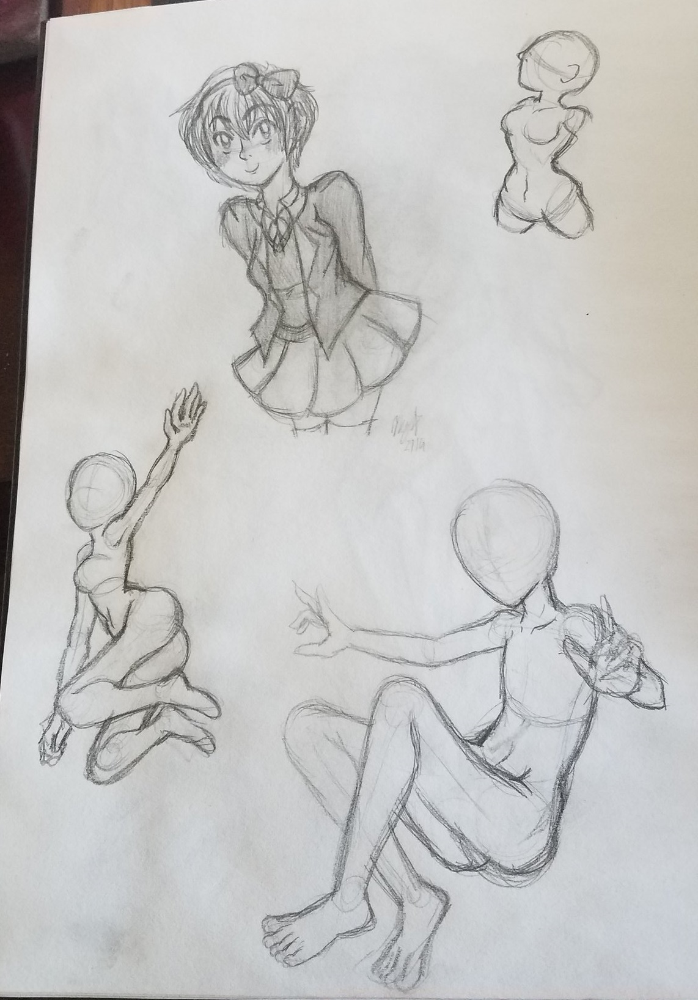
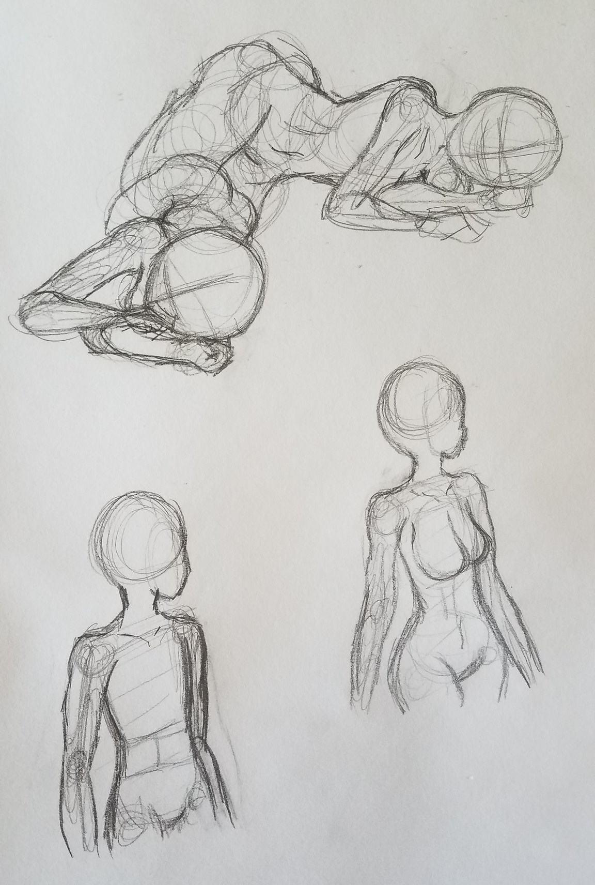
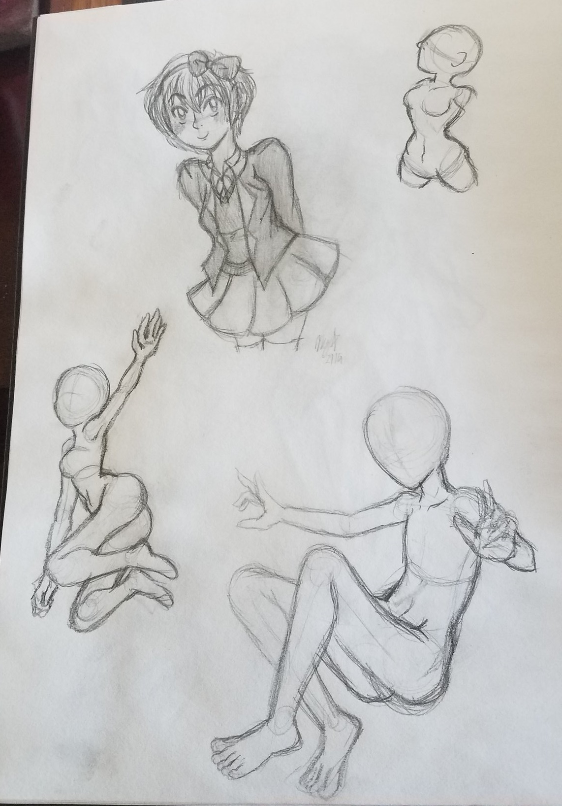

A portfolio is curated. The person making the portfolio puts their best foot forward, only selecting their finest works that they feel are appropriate for the context that the portfolio will be viewed in. But art is an imperfect process, in the same way that humans are imperfect beings. An artist often struggles—be it with the physical act of making, the journey to “perfecting” their craft, or with the emotions associated with a given piece. Creation is not a linear journey, either; sometimes an artist stagnates or deals with creative blocks. Therefore, it is important to have a more holistic representation of an artist’s work, and by extension, who they are as a person.
This is what this project attempts to represent.
A portfolio is curated. The person making the portfolio puts their best foot forward, only selecting their finest works that they feel are appropriate for the context that the portfolio will be viewed in. But art is an imperfect process, in the same way that humans are imperfect beings. An artist often struggles—be it with the physical act of making, the journey to “perfecting” their craft, or with the emotions associated with a given piece. Creation is not a linear journey, either; sometimes an artist stagnates or deals with creative blocks. Therefore, it is important to have a more holistic representation of an artist’s work, and by extension, who they are as a person; this is what my project attempts to represent.
The Rest of the Portfolio is a web-based selection of my own works in progress, unfinished works, ideas, practice sketches, and derivative works that would not typically be considered portfolio-worthy. Opening each individual work will allow you to hear some of the thoughts associated with that piece, rising up above a sea of thoughts about the rest of my work.
Alt text is available for those who need it, but I would encourage those who do not need it to experience this piece with alt text off and background voices on for the full effect.
Background image by rawpixel.com on Freepik
April 2020 (age 21)
Oops, more like "eight art styles."

Do the Eva anime and Rebuilds count as two different styles?
...Do Brotherhood and 03 count as different styles?
Dang, I forgot about this one. Wish I’d finished it.
Should I go back and finish it or just start over? It’s so old at this point...
Maybe I can come up with more different styles this time...
February 2023 (Age 23)
An NPC for a casual roleplay campaign between friends that kind of accidentally turned into a Kingdom Hearts-adjacent character...whoops.


Okay, it’s time to design an evil little waifu!
Okay, I tried to not just make her a Kingdom Hearts OC, I tried to keep her separate from the lore of the games...but fuck it, it’s Discord roleplay, it's not that deep. The campaign evolved to be very tied to the games anyway, so I’m embracing it.
Okay, I can't pinpoint what exactly is wrong with this first attempt, but it is NOT working.
Okay. I like the skirt on this second one, but the whole thing together reads more “dancer” than “Kingdom Hearts OC.”
Yes, we love a cold shoulder top!
Oh, the stupid extra belts on her waist that are making an X was GENIUS. Thank you for that idea, friend.
Wait, wait, wait, here it is. HERE we go. THIS is it, this is the design. Let’s GOOOO!!
She looks like she’d bully me in high school. So honestly? I think I did my job right.
June 2021 (Age 22)
You ever just look at an alt for the Super Smash Bros villager and go, "hey, I can make that a whole character"? Just me? Okay.
Villager in-game screenshot: Serebii


This should be a fun challenge! I get to try and put my own twist on this design.
Why does this whole thing look like one piece? You’re getting a cardigan.
Girl, what are your SHOES??? Okay, we are changing those...
I diagnose you with floofy hair.
Haha, now if only I could bring this kind of energy for characters that aren’t for existing properties!
January 2017 (age 17)
Totally not done a week before applications for RISD were due.


Yeesh. Did I take this too literally?
Does this even count for the prompt?
I am pretty happy with the figurative version, even if it’s not my usual style...
The photo would’ve been way more at home in MA+P, wouldn’t it...
Man, I didn’t even bother cleaning up the background on the photo or anything. Even if I were to take this same photo again, I’d do it completely differently.
Yeah, these are way too literal. RISD was probably way too traditionally artsy for me.
I am taking this photo to my grave. I mean, I guess I’m not, if I’m gonna use it for thesis. But otherwise, I would.
Left: July 2018 (age 19)
Right: October 2016 (age 17)
My copic markers made me UNSTOPPABLE.


I bet if I redrew this now, I could probably make the pose way more dynamic.
Yeah, the old one has Ed just kind of hovering there. There’s more movement in the new one.
Though...I think Winry might’ve actually had more lean in the old one. She probably should be leaning back more...? Oh well.
Yesss copic markers come through!!!
January 2017 (age 17)
Man.


I need to have studies if I’m gonna apply to art schools. I don’t have those. I don’t do those. Maybe I can turn into an actual artist real quick?
These don’t look right. Are these right? I mean, they’re better than my usual stuff...
This is painful to look at.
I mean, having references is good, but these were definitely not done because I “wanted” to do them...
These are not “studies.” These are sketches you threw together to seem like a “legit” artist.
February 2019 (age 19)
Man...part two, electric boogaloo.
 



I need to get better at anatomy. But how do I even start?
I need to be comfortable just scribbling in my sketchbook. Not everything needs to be finished.
...Dang it, I finished that Sayori.
These don’t look right...
Wow, okay, this one...this one’s bad. Why...why do you have such massive bazongas?
I am so bad at anatomy, and for what?
Left: January 2018 (age 18)
Right: October 2016 (age 17)
In which I finally learned how to draw wings. Oh, and copic marker glow up.


Oh, hey, an old Inktober that I liked the concept for. Guess who’s getting a glow up?
HIS RIGHT FOREARM IS SO MUCH LONGER THAN HIS LEFT ONE. HELP.
Ugh, that upgrade to copic markers feels so GOOD.
The wings are SO much better. References are a blessing.
April 2022 (age 23)
He's for an already existing universe. I don't care, he's existed since 2012, he's still special to me.

(AFFECTIONATE UGLY CRYING) MY SON...
Your design has changed SO much. It took a lot to get him to this point.
And he used to be the “girl disguised as boy” trope. Jeez, no wonder I turned out gay.
September 2022 (age 23)
When I get into a new thing, I can't get into it a normal amount. I have to obsess over it. It's how my brain works, unfortunately.

How the hell do you design weapons?
Combining all my favorite things? Man, I am at PEAK brainrot.
Hey, these actually didn’t come out bad.
The Mother 3 one just kinda just looks like Shooting Star, but with a different coat of paint. But, ehh...
I am once again putting all of my effort into a derivative work that I can’t actually monetize or use to further whatever career I end up having.
September 2022 (age 23)
Exposing myself for the crime of being a cosplayer. Cringe. (kidding)

(screaming)
What am I doing. What am I doing. I don’t know what I’m doing. What am I doing—
FUCK. I FUCKED UP THE PAINT. SHIT.
I am finishing my degree in MA+P. I could be doing anything with my life. Instead, I’m building an oversized key to pretend to be a video game protagonist. Real intellectual stuff.
(background screaming)
Oh shit, this is heavier than I thought it was gonna be. I’m gonna be so buff by the time the con rolls around and I have to carry this thing all day!
March-April 2023 (age 24)
"I'd like to see you make a new piece of art for this project." Alright, bet.


Okay, so my themes are...remix or something, media that make up who I am, trying to figure out who I am in the midst of all of this...I threw in a lot of character reference sheets too, so I should probably make a character. That’s something I like to do too, so that’ll ensure it’s something fun and fulfilling. I could also use this as a sona...
You’re going to be...a doll trying to figure out their identity when they’ve been patched together from lots of other parts.
Dammit, that already exists! That’s just Rei and Xion! ...No, wait. Actually, that works.
I’m so bad at coming up with outfits.
Oh, hi DJ, hi! Yeah, I’m doing this character creator for thesis! It’s relevant, I promise.
July 2019 (age 20)
I TRACED A PHOTO! I've committed art crimes! Burn me at the stake!


Tracing is a good way to learn. Tracing is a good way to learn. Tracing is a good way to learn. I am doing this for learning purposes. I am not cheating. Tracing is a good way to learn.
Fuck, you can totally see my boobs.
I love my boyfriend...
I have never drawn better clothing folds in my life, nor will I ever draw better clothing folds again.
Left: May 2010 (age 11)
Right: January 2017 (age 17)
Redrew my 5th grade anime fanart for fun. Submitted it to colleges after. Think they noticed? Haha.


Hahaaa, I can’t believe I got away with submitting fanart to Champlain.
Hahahahaha...my old art...
Her hands are so TINY in the old one, and her head is so LARGE...
The new one isn’t perfect, but it’s leagues ahead of where I was in fifth grade. I mean, I would hope it is.
Maybe I can redraw this again...then it’ll be even better!
Ha...I submitted fanart to Champlain. Wooow.
November 2016 (age 17)
Image that got me into higher education. Yay!

Y’know, now that I look at it, I can kind of see how this would’ve been what the professors were looking for. With meaning and signifiers and stuff.
Knowing what I know now, if I were to go back and do this again, I would probably use a photo of my actual self instead of a stock photo.
Heh. The chalk writing is a little cheesy in hindsight, but, y’know, it gets the job done.